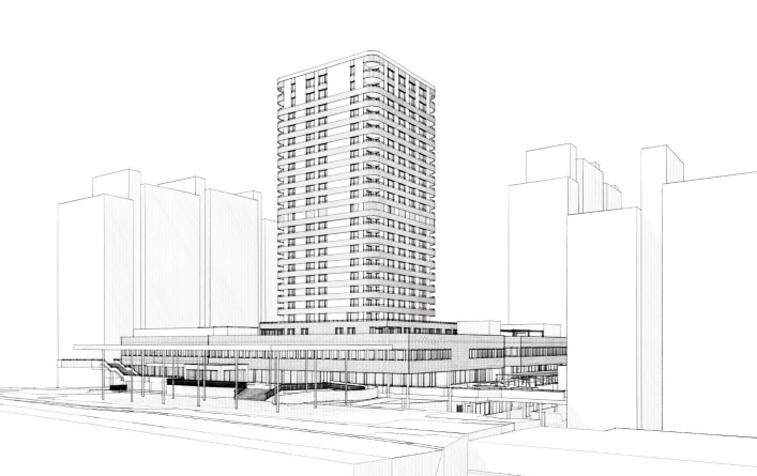
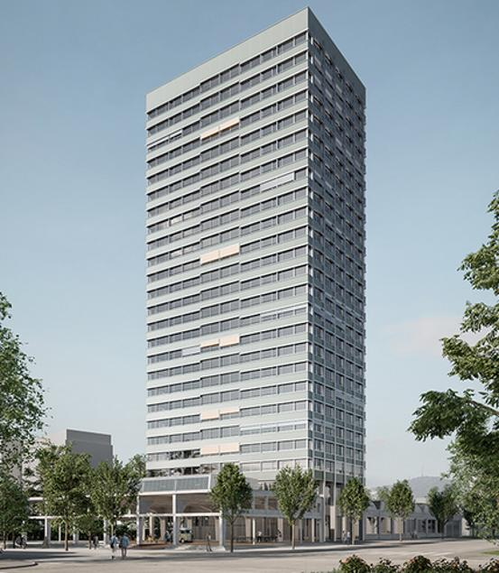
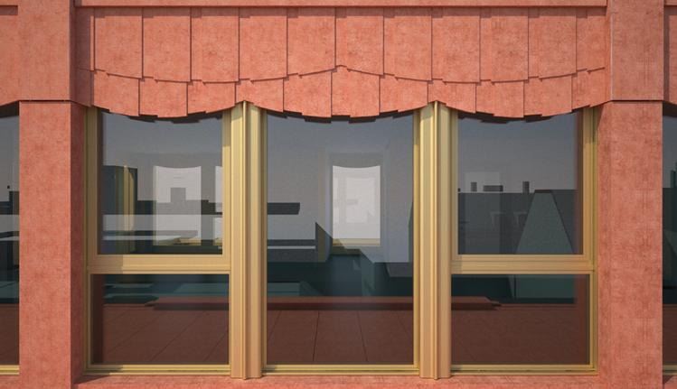
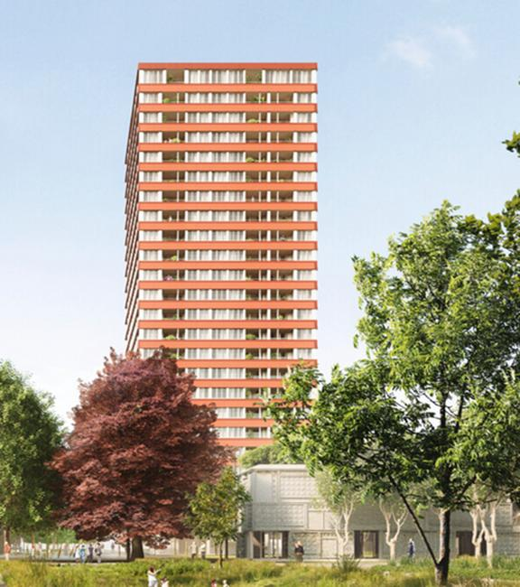
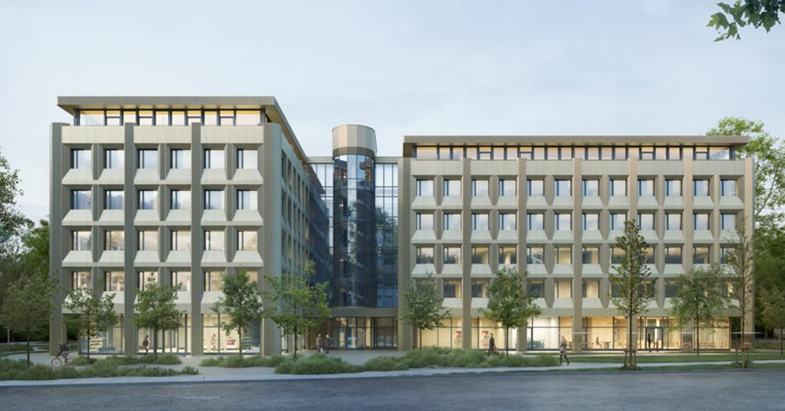
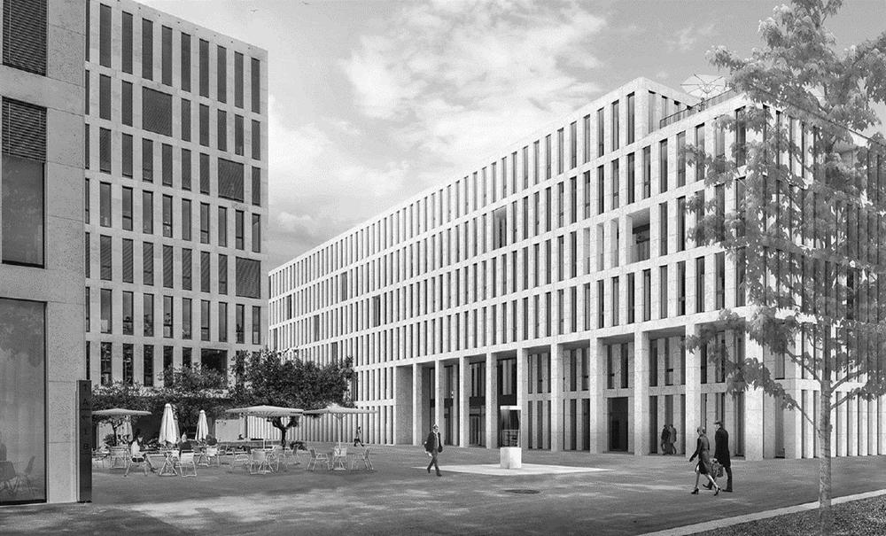
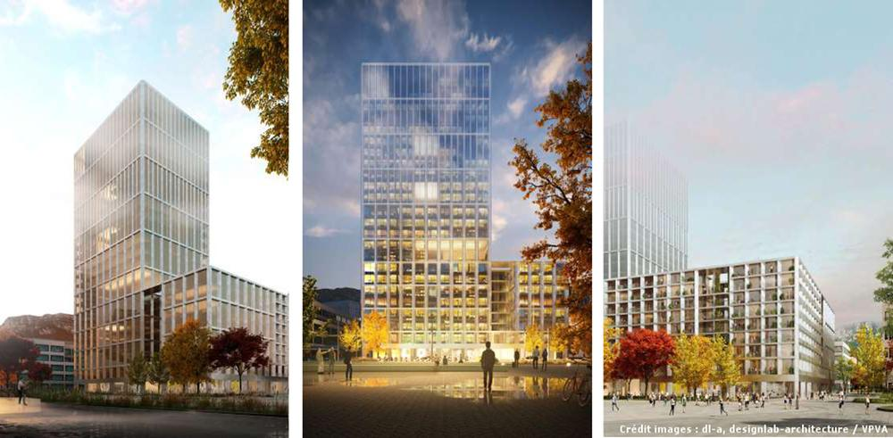

News
Neue Aufträge der Fahrni Fassadensysteme AG.

H66 Müllerbräu-Areal, Baden
Die Fahrni Fassadensysteme AG baut die Fassade des Projektes H66 Müllerbräu-Areal in Baden

DOMUS Liebrüti, Kaiseraugst
Die Fahrni Fassadensysteme AG baut die Fassade des Projektes DOMUS Liebrüti in Kaiseraugst

OMU 93, Bern
Die Fahrni Fassadensysteme AG baut die Fassade des Projektes OMU 93 in Bern

HIAG, Freihofstrasse 25, Altstetten
Die Fahrni Fassadensysteme AG baut die Fassade des Projektes HIAG, Freihofstrasse 25, Altstetten

BGER, Bezirksgericht Zürich W30
Die Fahrni Fassadensysteme AG baut die Fassade des BGER, Bezirksgerichts Zürich W30

ZWHATT, Regensdorf Baufeld G
Die Fahrni Fassadensysteme AG baut die Fassade des Projektes ZWHATT, Regensdorf Baufeld G

WTCL, World Trade Center, Lausanne
Die Fahrni Fassadensysteme AG baut die Fassade des Projektes WTCL, World Trade Center, Lausanne

G2, Guisanplatz Bern, Haus D
Die Fahrni Fassadensysteme AG baut die Fassade des Projektes G2, Guisanplatz Bern, Haus D

Bankgebäude, Genf
Die Fahrni Fassadensysteme AG baut die Fassade eines Bankgebäudes in Genf